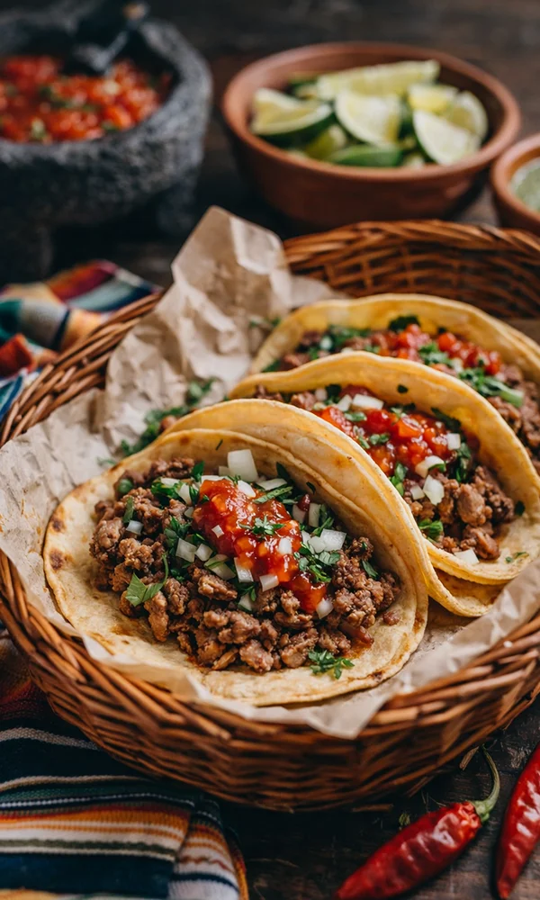

STORY
伝統を踏襲した本物のタコス
タコスは本当に健康的なのか？
タコスは健康的かと疑問に思う人が多く居ると思いますが、代表的健康的なご飯は和食と共に栄養学では『和食、地中海食、伝統メキシコ食』はユネスコ無形文化遺産にも登録されている「人類の生存戦略」と言われています。
伝統メキシコ食にタコスは入るのか？
理由に多くの方はタコスをジャンクフードかよくわからない料理だと思います。それはタコスにはアメリカで生まれたTEX-MEXにもタコスがあるからです。
私たちの作るタコスは伝統を踏襲した物です
私たちは伝統的な製法にこだわり、本場の味を大切にしています。
